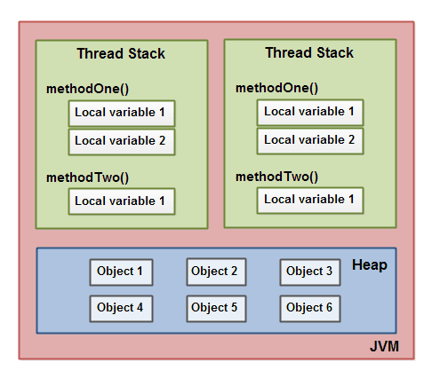
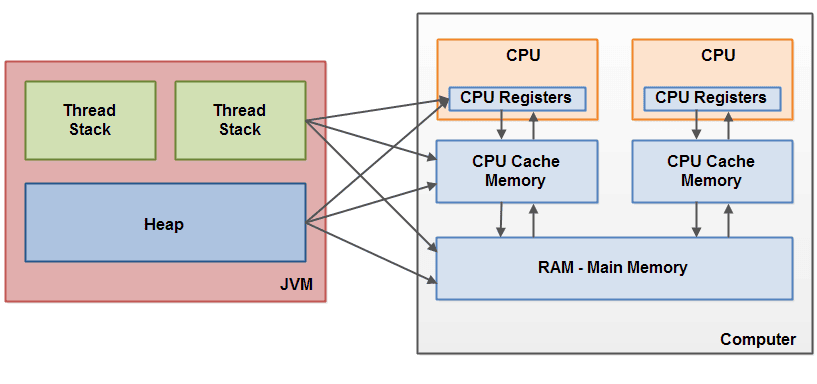

Ch01-Java 之 Java 内存模型 (JMM)
August 1, 2017
JMM 定义了 Java 虚拟机 (JVM) 在计算机内存 (RAM) 中的工作方式，JVM 是 java 整个计算虚拟模型。
1. JMM 介绍 #
根据 JMM 模型，JVM 把内存分成了线程栈区（工作内存）和堆区（主内存）。
一个变量如何从主内存拷贝到工作内存，如何从工作内存同步回主内存之类的实现细节，Java 内存模型中定义了以下 8 种操作来完成。这 8 种操作都是原子性的、不可再分的。
| 操作 | 说明 |
|---|---|
| lock | 作用于主内存变量，它把一个变量标识为一条线程独占的状态。 |
| unlock | 作用于主内存变量，它把一个处理锁定的状态的变量释放出来，释放后的变量才可以被其它线程锁定，unlock 之前必须将变量值同步回主内存。 |
| read | 作用于主内存变量，它把一个变量的值从主内存传输到线程的工作内存中，以便随后的 load 动作使用。 |
| load | 作用于工作内存变量，它把 read 操作从主内存中得到的值放入工作内存的变量副本中。 |
| use | 作用于工作内存中的变量，它把工作内存中一个变量的值传递给执行引擎，每当虚拟机遇到一个需要使用到变量的字节码指令时将会执行这个操作。 |
| assign | 作用于工作内存变量，它把一个从执行引擎接到的值赋值给工作内存的变量，每当虚拟机遇到一个给变量赋值的字节码指令时执行这个操作。 |
| store | 作用于工作内存的变量，它把工作内存中一个变量的值传送到主内存中，以便随后的 write 操作使用。 |
| write | 作用于主内存的变量，它把 store 操作从工作内存中得到的值放入主内存的变量中。 |
2. JMM 与 JVM 之间的关系 #

3. JMM 与 硬件内存的关系 #
